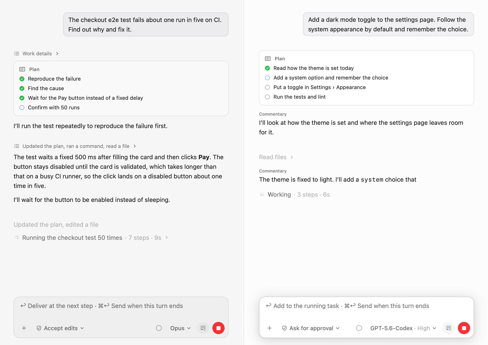

You: I already use Codex and Claude Code.
What does Yardlet change?
Lightweight,
non‑intrusive, yet
versatile ADE.
Yardlet runs Claude Code, Codex and other agent CLIs side by side in one native Mac app, with no hooks, no wrappers and nothing written into their settings.
Install Yardlet?
Version 0.11.19 · macOS 15 or later
Apple silicon or Intel
Or with Homebrew: brew install --cask zzunkie/tap/yardlet

- 53MiB
- Memory at rest after a first launch
- 214MiB
- With ten tasks streaming at once
- No hooks
- No wrappers, and nothing written into their settings
Memory figures leave out the agents' own CLIs and were measured with Yardlet 0.11.10 on an M1 Pro MacBook Pro with macOS 15.6 in November 2026. How it was measured.
Yardlet is a free, open-source native macOS app for running coding agents side by side in one window of projects and tasks. It starts the real CLIs of Claude Code, Codex and other agents. Each agent keeps its own agent loop, sign‑in and session history; Yardlet adds no agent layer and writes nothing into the agents' settings.